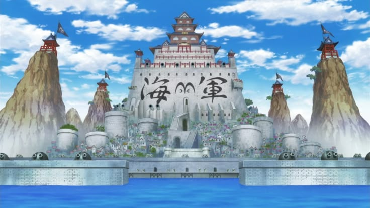
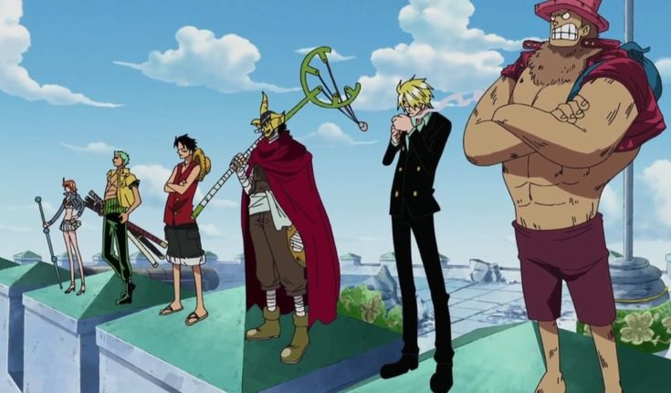
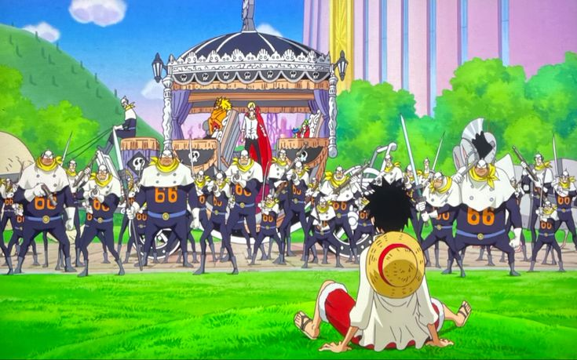

Top 3 Sagas de One Piece
Saga de Marineford
Marineford es el clímax de la primera mitad de One Piece y una de las sagas más intensas y emotivas de la serie. Es un punto de inflexión para Luffy y los Sombrero de Paja, mostrando la escala del mundo y las consecuencias de sus decisiones.
Puntos fuertes
-
Escala épica: La guerra entre los Piratas de Barbablanca y la Marina, con la ejecución de Ace en juego, reúne a casi todos los personajes relevantes de la época: los Shichibukai, los almirantes, Barbablanca, y figuras como Garp y Sengoku. Es un despliegue de poder y caos que muestra lo vasto y peligroso que es el mundo de One Piece.
-
Desarrollo de Luffy: Luffy, que hasta ese momento había salido victorioso de casi todo, se enfrenta a su impotencia. Su desesperación por salvar a Ace, su lucha contra enemigos mucho más fuertes y la tragedia final marcan un antes y un después en su carácter. Es aquí donde entiende que necesita volverse más fuerte para proteger a los suyos.
-
Impacto emocional: La muerte de Ace y Barbablanca no solo golpea a Luffy, sino a los lectores. Oda logra que sientas el peso de la pérdida y la fragilidad de los sueños en un mundo tan cruel.
Saga de Enies Lobby
Enies Lobby es la culminación del arco de Water 7, considerada por muchos la saga que consolidó One Piece como una obra maestra. Es una mezcla perfecta de acción, desarrollo de personajes y temas profundos sobre lealtad, justicia y sacrificio.
Puntos Fuertes
-
Desarrollo de los Sombrero de Paja: Cada miembro de la tripulación tiene su momento para brillar. Desde el enfrentamiento de Zoro contra Kaku, hasta la lucha de Sanji contra Jabra, pasando por el épico “Sogeking” disparando la bandera del Gobierno Mundial. Pero el foco está en Nico Robin y su arco de redención: su grito de “¡Quiero vivir!” es uno de los momentos más conmovedores de la serie.
-
Temas profundos: Enies Lobby explora la corrupción del Gobierno Mundial, el peso del pasado (con el trasfondo de Robin y Ohara) y la fuerza de los lazos entre los Sombrero de Paja. Quemar la bandera del Gobierno Mundial es un acto de rebeldía que resuena con los ideales de libertad de la serie.
-
Momentos memorables: El “Sogeking Theme” sonando mientras Usopp anima a Luffy, el Going Merry llegando a salvarlos en el último momento, y la despedida del barco con su funeral vikingo. Cada escena está diseñada para quedarse grabada.
Saga de Whole Cake Island
Whole Cake Island es una de las sagas más complejas y completas del post-timeskip. Mezcla intriga política, desarrollo de personajes secundarios, acción brutal y una profundidad emocional que muestra la madurez narrativa de Oda.
Puntos Fuertes
-
Sanji en el foco: Esta saga le da a Sanji, uno de los pilares de la tripulación, un arco de personaje espectacular. Su pasado con la familia Vinsmoke, su lucha interna entre su lealtad a los Sombrero de Paja y su deseo de proteger a Zeff, y su sacrificio al intentar alejarse para salvar a sus amigos, lo convierten en un personaje mucho más profundo. Su escena cocinando para Big Mom es puro Sanji.
-
Ritmo y variedad: Whole Cake Island equilibra momentos de tensión (el plan de asesinato en la boda), comedia (los delirios de Big Mom persiguiendo el pastel), y revelaciones (el pasado de Sanji, Pudding como aliada). Además, introduce elementos clave como las Road Poneglyphs y el rol de Jinbe en la tripulación.
-
Katakuri vs. Luffy: La pelea en el Mundo de los Espejos es una de las mejores del post-timeskip. Katakuri no solo es un oponente formidable, sino un reflejo de lo que Luffy podría ser: un líder respetado que protege a su familia. La batalla es tanto física como psicológica, con Luffy desarrollando su Haki de Observación y ganándose el respeto de su rival.